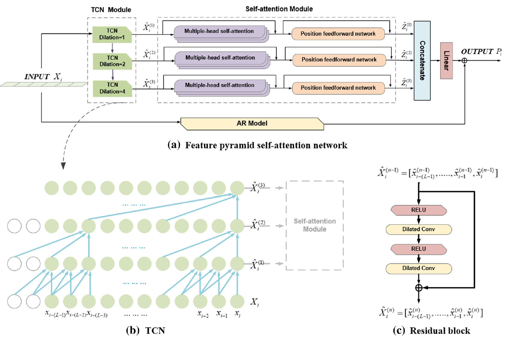
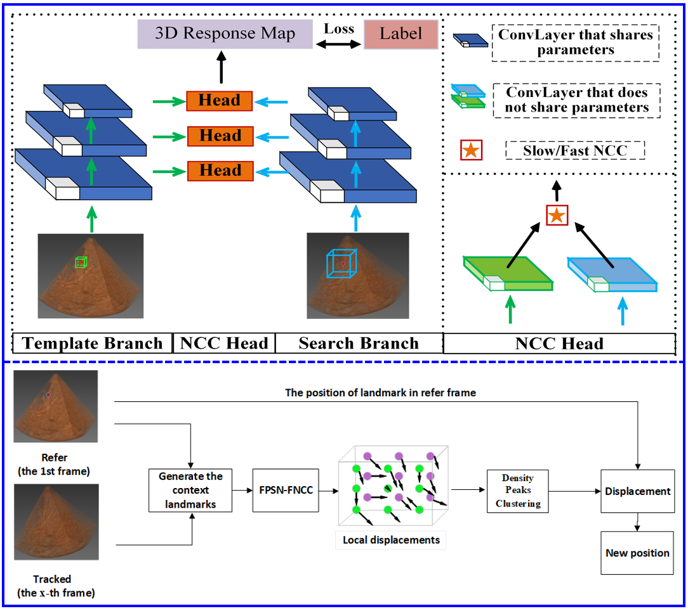
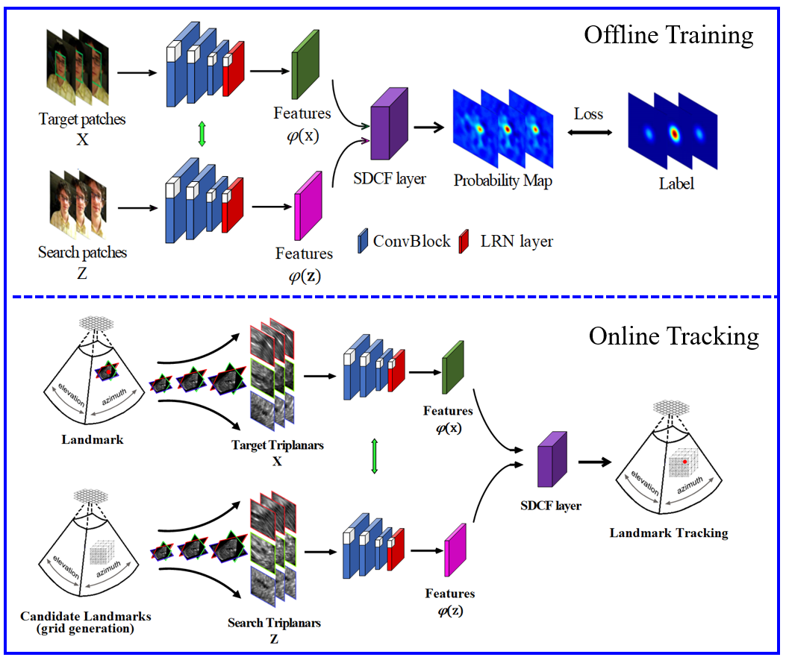
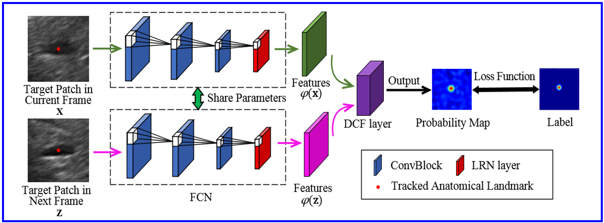
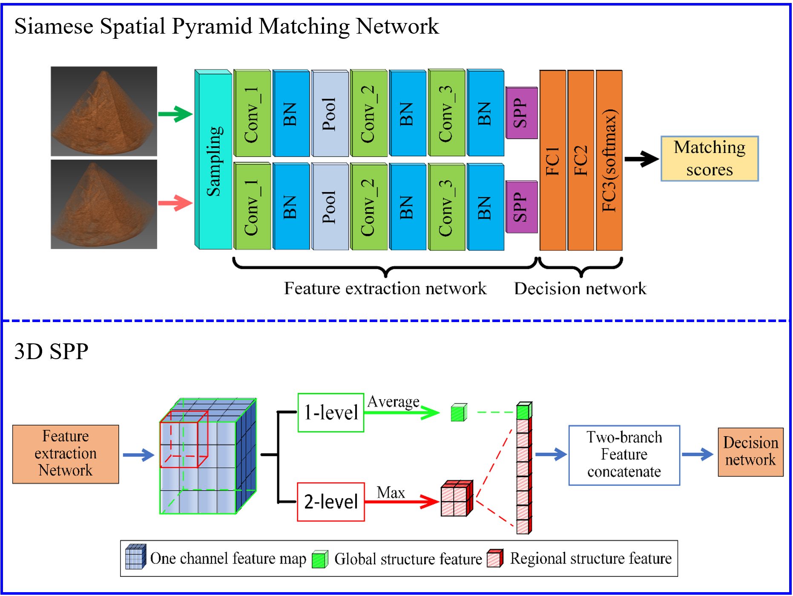

|  | Feature Pyramid Self-attention Network for Respiratory Motion Prediction in Ultrasound Image Guided Surgery Chen Yao, Jishuai He∗, Hui Che, Yibin Huang, Jian Wu International Journal of Computer Assisted Radiology and Surgery (IJCARS), 2022. |
|  | FPSN-FNCC: An Accurate And Fast Motion Tracking Algorithm in 3D Ultrasound for Image-guided Interventions Jishuai He, Chunxu Shen, Yao Chen, Yibin Huang, Jian Wu Physics in Medicine & Biology, 2021. |
|  | Tracking 3D Ultrasound Anatomical Landmarks via Three Orthogonal Plane‐based Scale Discriminative Correlation Filter Network Yibin Huang∗, Jishuai He∗, Xu Wu, Xiaozhi Zhao, Jian Wu Medical Physics, 2021. |
|  | Discriminative Correlation Filter Network for Robust Landmark Ttracking in Ultrasound Guided Intervention Chunxu Shen, Jishuai He, Yibin Huang, Jian Wu International Conference on Medical Image Computing and Computer-Assisted Intervention (MICCAI), 2019. |
|  | Siamese Spatial Pyramid Matching Network With Location Prior for Anatomical Landmark Tracking in 3-Dimension Ultrasound Sequence Jishuai He∗, Chunxu Shen∗, Yibin Huang, Jian Wu Chinese Conference on Pattern Recognition and Computer Vision (PRCV), 2019. |
| A Real-time Augmented Reality Device Integrated with Artificial Intelligence for Skin Toumor Surgery Kai Huang∗, Jun Liao∗, Jishuai He∗, Qian Deng, Han Wang, Yuancheng Liu, Lanyuan Peng, Sicen Lai, Ziqi Bai, Nianzhou Yu, Yixin Li, Zixi Jiang, Juan Su, Jinmao Li, Yan Tang, Mingliang Chen, Lixia Lu, Shuang Zhao, Jianhua Yao, Xiang Chen Submmited to Nature Medicine, 2022. |
Tsinghua University
Sep. 2018 - Jun. 2021M.S. in Biomedical Engineering
Northeastern University
Sep. 2015 - Jun. 2018B.E. in Biomedical Engineering
| Comprehensive excellent second class scholarship of Tsinghua University Shenzhen Graduate School |
| Outstanding student cadres of Northeast University |
| Second class scholarship of Northeast University |
| Neusoft scholarship |